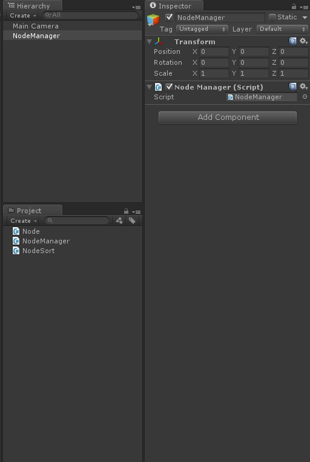
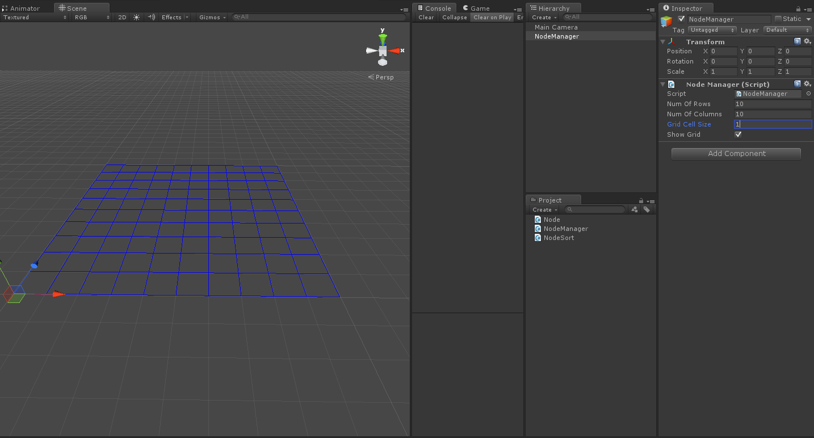

新增一個 C# 腳本命名為 NodeManager.cs
用來管理所產生的 Node
並產生一個空物件命名為 NodeManager
將 NodeManager.cs 拖拉至 NodeManager 上
如下圖：

using UnityEngine;
using System.Collections;
public class NodeManager : MonoBehaviour
{
//NodeManager Singleton
//Only create NodeManager once
private static NodeManager s_Instance = null;
public static NodeManager instance
{
get
{
if (s_Instance == null)
{
s_Instance = FindObjectOfType(typeof(NodeManager)) as NodeManager;
if (s_Instance == null)
Debug.Log("Could not locate a GridManager " +
"object. \n You have to have exactly " +
"one GridManager in the scene.");
}
return s_Instance;
}
}
//the number of row and column
public int numOfRows;
public int numOfColumns;
//the grid cell size
public float gridCellSize;
//display or not display the grid
public bool showGrid = true;
//Record nodes
public Node[,] nodes { get; set; }
void Awake()
{
CreateNodes();
}
//Create the node with it's position
void CreateNodes()
{
nodes = new Node[numOfColumns, numOfRows];
for (int col = 0; col < numOfColumns; col++)
{
for (int row = 0; row < numOfRows; row++)
{
Vector3 cellPos = GetNodePosition(col, row);
Node node = new Node(cellPos);
nodes[col, row] = node;
//Obstacle Update
cellPos -= new Vector3( 0, 100, 0 );
RaycastHit hit;
Ray ray = new Ray( cellPos, new Vector3( 0, 1, 0 ) );
if( Physics.Raycast( ray , out hit, 1000 ) )
{
if( hit.transform.tag == "Obstacle" )
nodes[col, row].MarkAsObstacle();
}
}
}
}
//Get the node center position with it's colomn and row
public Vector3 GetNodePosition(int col, int row)
{
Vector3 cellPosition = new Vector3();
cellPosition.x = col * gridCellSize + gridCellSize / 2.0f;
cellPosition.z = row * gridCellSize + gridCellSize / 2.0f;
return cellPosition;
}
//Get the current node's row with it's position
public int GetNodeRow( Vector3 position )
{
return (int)( ( 2 * position.z - gridCellSize ) / ( 2 * gridCellSize ) );
}
//Get the current node's column with it's position
public int GetNodeColumn( Vector3 position )
{
return (int)( ( 2 * position.x - gridCellSize ) / ( 2 * gridCellSize ) );
}
//Input one position and return a closest node position
public Vector3 GetNodeCenter( Vector3 position )
{
for (int col = 0; col < numOfColumns; col++)
{
for (int row = 0; row < numOfRows; row++)
{
if( col * gridCellSize <= position.x &&
position.x < ( col + 1 ) * gridCellSize &&
row * gridCellSize <= position.z &&
position.z < ( row + 1 ) * gridCellSize )
{
return GetNodePosition( col, row );
}
}
}
return Vector3.zero;
}
//Get the current node's neighbors
public void GetNeighbours( Node node, ArrayList neighbors )
{
Vector3 neighborPos = node.position;
int row = GetNodeRow( neighborPos );
int column = GetNodeColumn( neighborPos );
//Bottom
int leftNodeRow = row - 1;
int leftNodeColumn = column;
AssignNeighbour(leftNodeRow, leftNodeColumn, neighbors);
//Top
leftNodeRow = row + 1;
leftNodeColumn = column;
AssignNeighbour(leftNodeRow, leftNodeColumn, neighbors);
//Right
leftNodeRow = row;
leftNodeColumn = column + 1;
AssignNeighbour(leftNodeRow, leftNodeColumn, neighbors);
//Left
leftNodeRow = row;
leftNodeColumn = column - 1;
AssignNeighbour(leftNodeRow, leftNodeColumn, neighbors);
}
//Put neighbors to an ArralyList
void AssignNeighbour(int row, int column, ArrayList neighbors)
{
if (row != -1 && column != -1 &&
row < numOfRows && column < numOfColumns)
{
Node nodeToAdd = nodes[column, row];
if (!nodeToAdd.isObstacle )
{
neighbors.Add(nodeToAdd);
}
}
}
//Show the Grid
void OnDrawGizmos()
{
if (showGrid)
{
DebugDrawGrid( transform.position, numOfRows, numOfColumns, gridCellSize, Color.blue );
}
}
public void DebugDrawGrid(Vector3 origin, int numRows, int numCols,float cellSize, Color color)
{
float width = (numCols * cellSize);
float height = (numRows * cellSize);
// Draw the horizontal grid lines
for (int i = 0; i < numRows + 1; i++)
{
Vector3 startPos = origin + i * cellSize * new Vector3(0.0f, 0.0f, 1.0f);
Vector3 endPos = startPos + width * new Vector3(1.0f, 0.0f, 0.0f);
Debug.DrawLine(startPos, endPos, color);
}
// Draw the vertial grid lines
for (int i = 0; i < numCols + 1; i++)
{
Vector3 startPos = origin + i * cellSize * new Vector3(1.0f, 0.0f, 0.0f);
Vector3 endPos = startPos + height * new Vector3(0.0f, 0.0f, 1.0f);
Debug.DrawLine(startPos, endPos, color);
}
}
}
這邊較為複雜
所以將程式分段講解
6~26
實作 NodeManager 獨立模式
如果有興趣可以上網搜尋 Singleton Design Pattern
28~39
建立腳本內所需參數
41~44 Awake
初始化、呼叫 CreateNode 函式
46~71 CreateNode
初始化 Node 二維陣列
利用二次迴圈逐一產生 Node
並將之記錄在nodes[ , ]裡
73~80 GetNodePosition
回傳該行列 Node 的位置
82~86 GetNodeRow
回傳該位置上的 Node 列
88~92 GetNodeColumn
回傳該位置上的 Node 行
94~112 GetNodeCenter
回傳最接近輸入位置所對應的 Node 位置
114~137 GetNeighbours
取得鄰邊四方向上的 Node
139~151 AssignNeighbour
取得 Node 並回傳至 ArrayList
170~177 OnDrawGizmos
MonoBehaviour API
OnDrawGizmos
179~199 DebugDrawGrid
在 Scene 裡面畫出對應的格線
將程式儲存後
在 NodeManager 中填入想要的數值
就會在 Scene 視窗中顯示出一個方格陣列
( 如果沒有顯示請注意 showGrid 有沒有打勾! )
